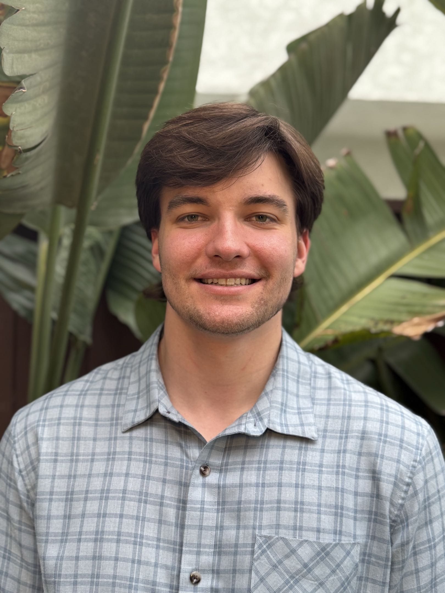
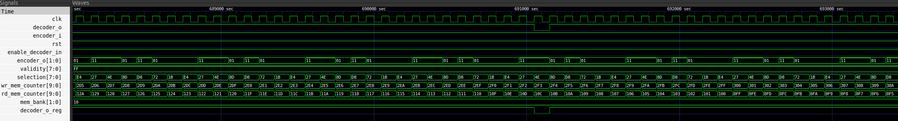
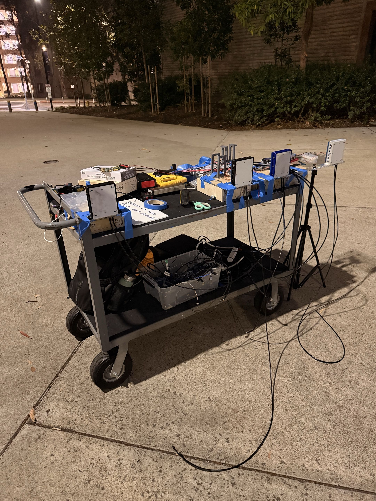
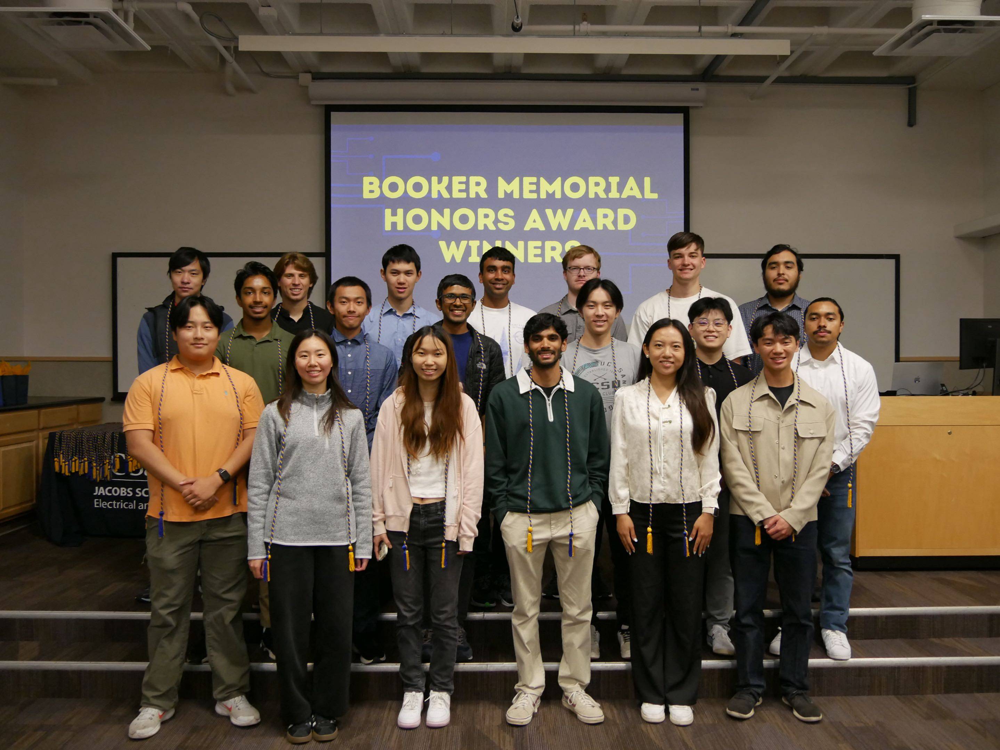

Communications
OFDM, MIMO, channel estimation, equalization, and measurement-driven test workflows.
Communications • RF Systems • RTL • Verification
I am Luke Wilson, an electrical engineer from San Diego pursuing graduate study at UC San Diego. My work spans end-to-end OFDM testbeds, near-field MIMO research, synthesizable RTL, digital verification, and transistor-level circuit design.

Current focus
OFDM, MIMO, channel estimation, equalization, and measurement-driven test workflows.
RTL architecture, synthesis, timing-aware implementation, and ASIC-oriented design tradeoffs.
SystemVerilog testbenches, waveform debugging, coverage-oriented validation, and hardware bring-up.
Selected Work
Digital Design / Communications
Implemented a SystemVerilog convolutional encoder and Viterbi decoder chain with branch metric computation, add-compare-select processing, rotating survivor memory banks, and traceback-based decoded output reconstruction.

Digital Interface Design
Built a UART transmitter, receiver, and loopback top level in SystemVerilog, using FSM-based control and self-checking testbenches to verify byte-accurate serial communication.
Control / Datapath Design
Designed a memory-backed encryptor driven by a programmable 6-bit LFSR, including configuration loading, preamble generation, encrypted payload writes, and self-checking verification.

Experience
Develop wireless communication simulations and hardware test pipelines, validate OFDM transceiver behavior, and collaborate on experiments spanning DSP algorithms, RF measurements, and system-level performance evaluation.
Taught transmission lines, wave propagation, and core electromagnetics concepts through office hours, grading, and technical instruction for undergraduate students.
Coursework and project work in VLSI architectures, integrated circuits and systems design, information theory, communications, advanced computer architecture, and digital signal processing.
Technical Profile
Python, MATLAB, SystemVerilog, Verilog, C/C++, Bash, ARM Assembly
Cadence Virtuoso, Innovus, Synopsys Design Compiler, ModelSim, Questa, gate-level debug, timing analysis
OFDM, MIMO, channel estimation, equalization, digital signal processing, wireless system evaluation
Ettus USRP B210 and X410, PlutoSDR, FPGA prototyping, oscilloscopes, signal generators, spectrum analyzers
Recognition
Booker Award recipient, high school valedictorian, 99th percentile SAT, and co-author on the near-field MIMO ground station paper.

Contact
I am looking for opportunities across communications systems, RF, digital design, RTL logic, and digital verification.
{kind=link}
{kind=link}
{kind=link}